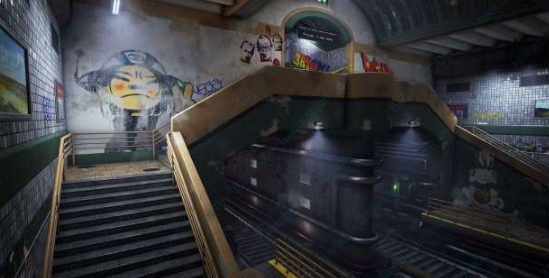
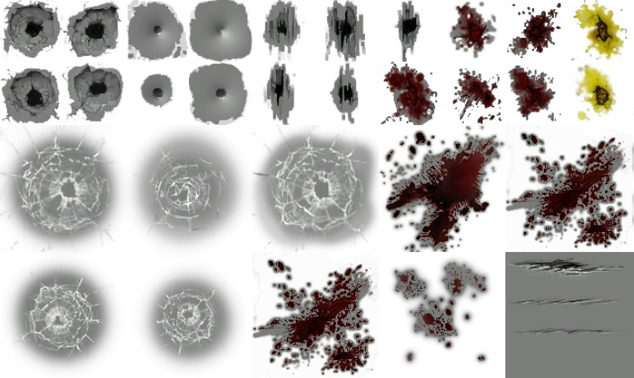
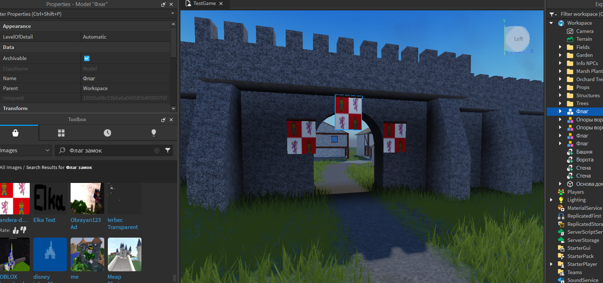
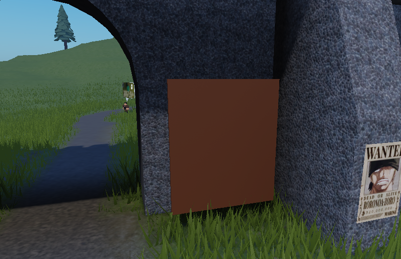
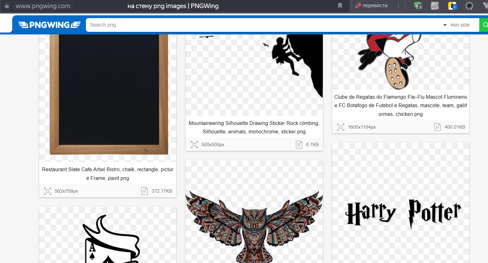
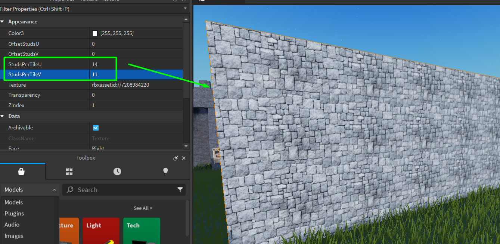
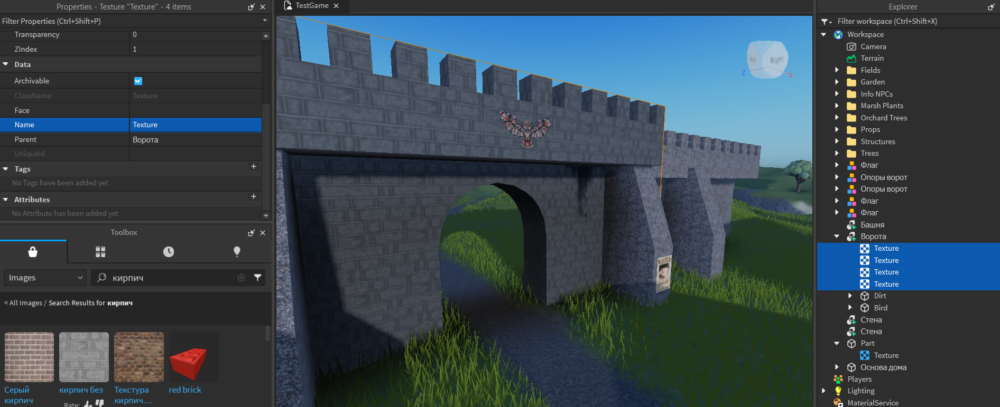
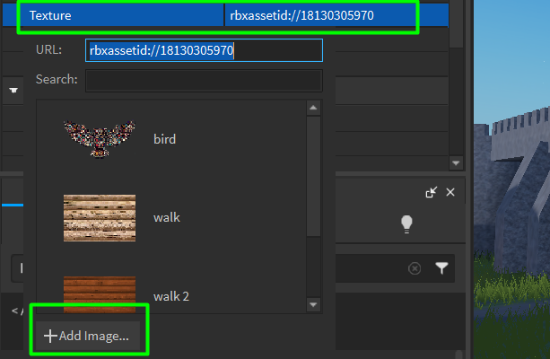
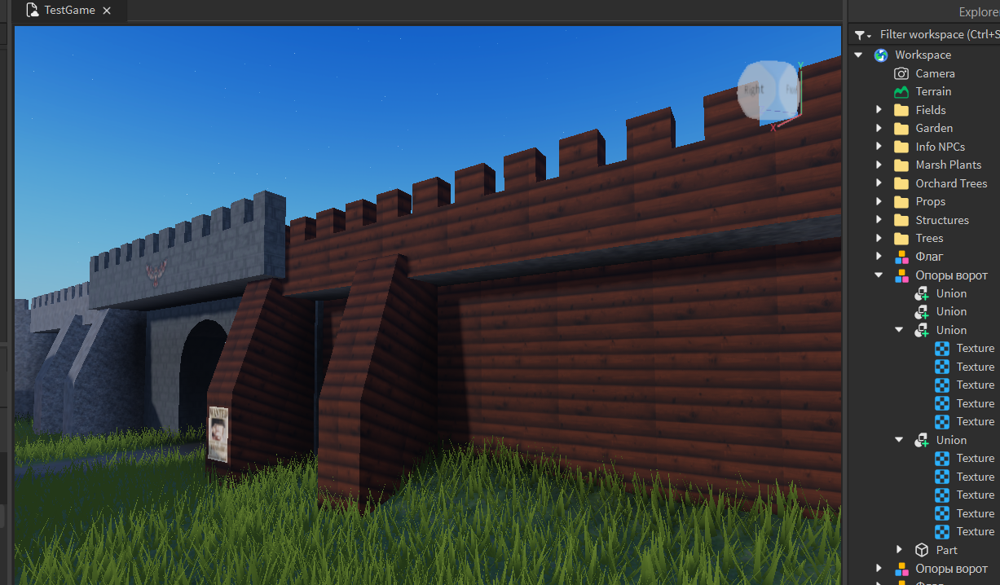
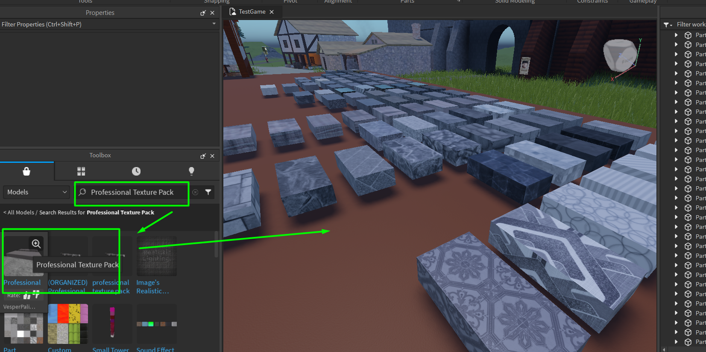

Создание игр в Roblox Studio
Работа с декалями и текстурами
В этом занятии мы узнаем, что такое декали, как они работают и как настраивать текстуры. В работу 3D-художника, помимо создания непосредственных моделей, входит также их покраска и создание базовой текстуры.
Любой трехмерный объект раскрашивается при помощи технологии UV- текстур. Вся информация о цвете модели на самом деле хранится на плоском изображении и во время игры проецируется на объемную модель.
Чтобы понять, как именно модель делится на различные детали и разворачивается на плоскость, можно привести пример футболки или другого элемента одежды. На одежде можно найти швы. Если разрезать футболку по этим швам, получится набор плоских кусков ткани, которые можно развернуть на поверхности. При этом если сшить футболку обратно, она снова станет объемным объектом. По такому же принципу трехмерные модели делятся на плоские детали и разворачиваются на плоскости картинки.
После этого картинка раскрашивается, а информация, содержащаяся на ней, "сшивается" и переносится на объёмную модель. Такие картинки называются "текстурными картами" и без них невозможна работа ни одной игры.
B Roblox Studio такие карты применяются только для сложных объектов, созданных в сторонних программах, и с ними мы работать не будем, однако принцип работы декалей и текстур тот же.
Изучение декалей. Практика работы с декалями
Практическую часть занятия следует начать с изучения декалей. Что же это?
Декали - это специальные объекты, которые позволяют нанести рисунки на любые объекты в Roblox Studio. Они работают следующим образом: картинка проецируется на одну из частей детали и растягивается по её плоскости.
Декали очень широко применяются в игровой индустрии - с их помощью наносятся не только рисунки, но и добавляются дополнительные детали поверхностей. Это позволяет разнообразить внешний вид поверхностей, не добавляя новые материалы и текстуры.
Примерами декалей являются дырки от пуль, следы крови, ржавчина на трубах, газетные вырезки на стене и так далее, — чаще всего разработчики используют декали, чтобы сделать поверхности в игре разнообразнее. Это быстрее и проще, чем рисовать текстуру целиком.
Применение декалей - плакат
Для первого примера создадим плакат, который будет размещен на воротах деревни. Используем следующий порядок действий:
- Добавим стандартную прямоугольную деталь и разместим ее на стене городских ворот.
- После этого найдем нужную декаль в Toolbox.
- Откроем Toolbox и перейдем в раздел Images.
- В строке поиска наберем запрос, например "wanted poster", и, не снимая выделения с постера, кликнем на подходящую картинку:
- К объекту будет добавлен дополнительный дочерний объект Decal.
- Плакат готов, но нужно изменить его толщину и скрыть деталь, на которую была спроецирована картинка. Для этого выберем родительский объект и установим его параметр Transparency равным 1.
- Подровняем плакат на стене.

С большой долей вероятности декаль будет добавлена на неправильную сторону детали. Выберем декаль через окно Explorer и изменим её параметр Face.
Также обратим внимание на параметр Texture. В этом параметре указана ссылка на картинку, которую мы видим на декали.
Попробуем изменить размер плаката. Заметим, что при изменении родительской детали, картинка будет растягиваться по размеру - это отличительная особенность декалей, текстуры ведут себя другим образом!
Праактикуемся!
- Создаем флаг
- Добавляем грязь на стенах
Необходимо самостоятельно создать флаги, которые будут размещены на воротах с внешней стороны.
Добавим пятно грязь на уже существующую стену, чтобы увеличить реалистичность. (Вряд ли в деревне кто-то моет стены..) Создадим большую прямоугольную деталь, разместим её вполтную к стене.
В окно Toolbox найдем декаль "dirt" (грязь) и определим её на родительскую деталь. Выберем лицевую сторону в параметре Face и не забудем сделать родителя прозрачным.
В результате у нас получится большая деталь с картинкой грязи, которую можно расположить около стены и таким образом разнообразить её внешний вид. Такой подход очень часто используется в игровой индустрии для экономии ресурсов и времени!
Создание собственных декалей. Только для тех, кто хочет стать профессионалом!
Декали - это прозрачные изображения без фона, для того, чтобы создать их, нам нужно найти подходящее изображение в формате PNG (без фона).
Для поиска нам очень поможет сайт pngwing.com
Перейдем на сайт и введем в поиске запрос. Например, можно найти дополнительные текстуры карты (пыль, грязь, царапины на стенах, плакаты и т.д.).
Скачаем понравившуюся картинку и переименуем её для удобства.
Если проект не опубликован, опубликуем его, это необходимо для следующих шагов.
Откроем окно Asset Manager во вкладке View.
В открывшимся окне выберем папку Images и нажмем на кнопку Bulk import.
Найдем и загрузим нашу текстурную карту в Asset Manager. Теперь эта картинка добавилась к материалам проекта и её можно применить к любой декали или текстуре!
Создадим ещё одну большую деталь и добавим на неё нашу декаль, настроим её парамтеры. Готово!
Изучение текстур. Практика работы с текстурам
Следующая тема, которую нужно разобрать - работа с текстурами.
Отличие в применении декалей и текстур
Декали применяются для того, чтобы добавить одно уникальное изображение на какую-то поверхность. Проблема их использования заключается в том, что при растяжении родительской детали, изображение также будет растягиваться. В случае, когда нужно этого избежать и сделать дополнительный материал, удобнее использовать текстуры. Они работают схожим образом, но имеют одно очень важное отличие - картинка, которая проецируется на сторону детали, бесконечно повторяется и заполняет собой всё ее поверхность.
Как создать текстуру для своего проекта
Чтобы продемонстрировать действие текстур создадим большую деталь и в окне Explorer добавим к ней объект Texture.
Выберем объект Texture и перейдем в его настройки в окне Properties. Найдем параметр Texture и добавим для примера картинку с адресом: rbxassetid://7208984220

После этого мы увидим, что картинка бесконечно заполнила одну из сторон детали. Сейчас очень сильно виден повтор картинки, этот эффект называется "тайлинг". Чтобы его исправить, изменим значение параметров текстуры StudsPerTileU и StudsPerTileV - это свойство, которое указывает ширину и высоту картинки в одном повторении.
Оптимальным размером для данной текстуры является 14 и 11. Текстуры применяются на одну из сторон детали. Для того, чтобы сделать полноценный материал, сдублируем полученную текстуру внутри нашего объекта 5 раз и для каждой текстуры укажем свою сторону.
Праактикуемся!
Нашу текстуру можно скопировать на любой геометрический объект. Для этого выделим все 6 текстур, скопируем их любым способом и вставим в те элементы, в которых хотим сменить текстуру.
Нужно проделать это с каждой стеной и воротами.
Как добавить собственную текстуру??
Для этого нам нужно также найти картинку из интернета и скачать её, теперь она не обязаны быть прозрачной, можно любую.
При указании параметра Texture можно будет нажать на кнопку Add Image. После этого откроется окно, где мы можем выбрать картинку на компьютере и дать ей имя.
После подтверждения картинка будет добавлена как пользовательская текстура в My Image и с ней можно будет работать, как с обычными изображениями из ToolBox.
Дополнительная практика - работа с паками текстур
Благодаря применению текстур, можно сделать очень реалистичную игру, используя фото-текстуры.
Для этого найдем в Toolbox в разделе Models набор под названием Professional Texture Pack и добавим его на сцену.
В этом наборе текстур находится много качественных и интересных материалов, которые можно копировать на уже существующие объекты. Такой набор будет полезен для текстур нашего дома))
Домашкаа 😁
- Перекрасить дом, смоделированный на позапрошлом занятии, используя материалы из текстур-пака, либо из ToolBox
- * Если тебе слишком легко... То ты слишком крут! Можешь попробовать создать свою собственную текстуру и стилизовать объекты в доме по собственному усмотрению!